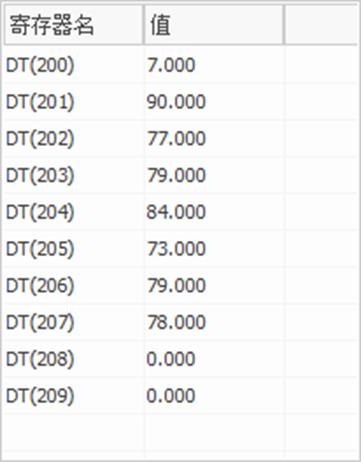

|
类型 |
文件指令 | |||||||||||||||||||||||||||||||||||||||||||||||||||||||||||||||||||||||||||
|
描述 |
加载、搜索控制器或U盘文件。 根据对应字符串选择功能。 U盘读取文件系统支持fat32和fat16，不支持ntfs。 4系列以下建议使用USB2.0的U盘，4系列或以上支持USB3.0。 VPLC5系列是Linux系统，读取文件名filename是区分大小写的，名称必须都大写。 | |||||||||||||||||||||||||||||||||||||||||||||||||||||||||||||||||||||||||||
|
语法 |
value = FILE "function" ,…
function：功能选择 | |||||||||||||||||||||||||||||||||||||||||||||||||||||||||||||||||||||||||||
|
适用控制器 |
通用，使用U盘功能时要求控制器带U盘接口 | |||||||||||||||||||||||||||||||||||||||||||||||||||||||||||||||||||||||||||
|
例子 |
例一 下载zar升级程序 DIM result '定义变量 IF U_STATE=TRUE THEN 'U盘插入判断 result = FILE "find_first",".zar",10 '扫描第一个zar格式文件，文件名保存到VR IF result=TRUE THEN '扫描成功判断 FILE"load_zar",VRSTRING(10,20) '下载VR保存的文件名对应的zar文件 ENDIF ENDIF END
例二 查找zar升级程序 FILE "find_next",10 '查找下一个zar文件存储结果到vrstring(10)
例三 FLASH与U盘数据互相拷贝 DIM a,aa(8) a=10 FOR i=0 TO 7 aa(i)=i NEXT WHILE 1 IF SCAN_EVENT(IN(0))> 0 THEN FLASH_WRITE 1,a aa FILE"copy_from","sd1.bin" '将flash块1的数据复制到U盘的sd1文件 PRINT "flash块的数据复制到U盘" ELSEIF SCAN_EVENT(IN(1))> 0 THEN FILE"copy_to","sd1.bin" '读取sd1的数据写入flash块1 PRINT "U盘数据写入flash" FLASH_READ 1,a,aa PRINT *aa ENDIF WEND END
例四 读取/删除U盘文件 FILE "LOAD_BYTE","00.txt",200,10,0 '读取U盘中00.txt文本文件的数据保存到table(200)开始的10个地址中，偏移量为0，从第一个字符开始读取 FILE "DELETE" , "sd0.bin" '删除U盘上名称为sd0.bin的文件 00.txt文件内容：ZMOTION 读取结果：第一个位置存储字符个数，后面的为依次存储字符数据。 
例五 FILE "FIND_FIRST", 1, 0, “C:\DIR1” '搜索U盘的DIR1目录 |